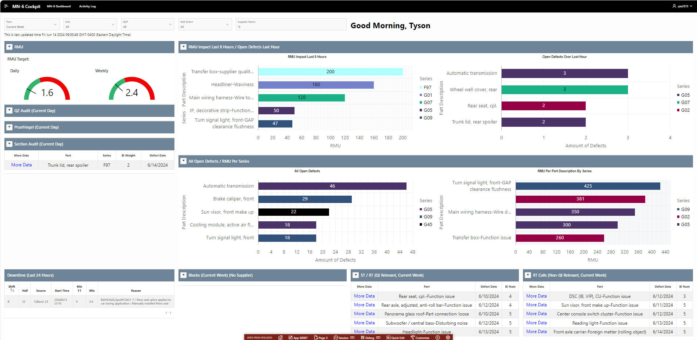
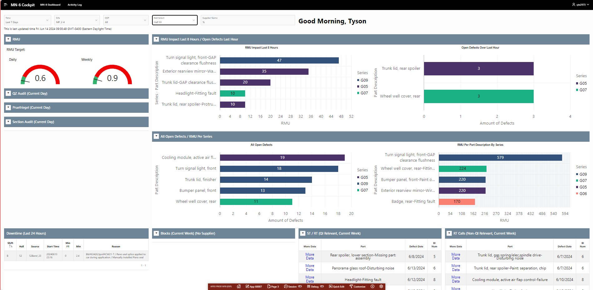
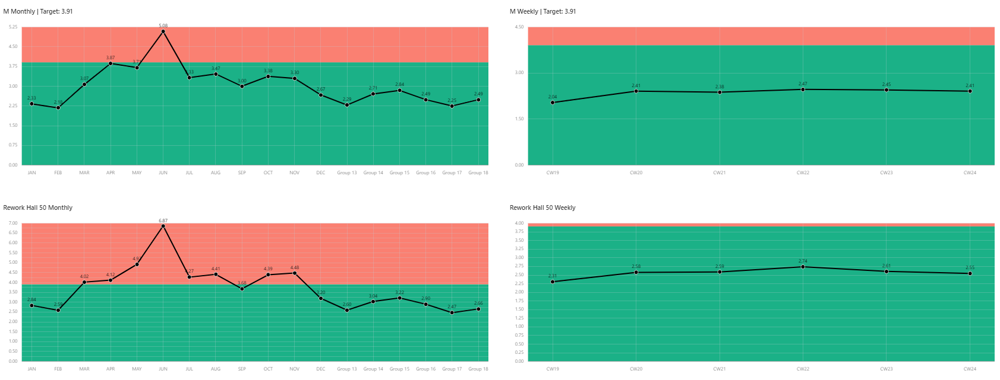
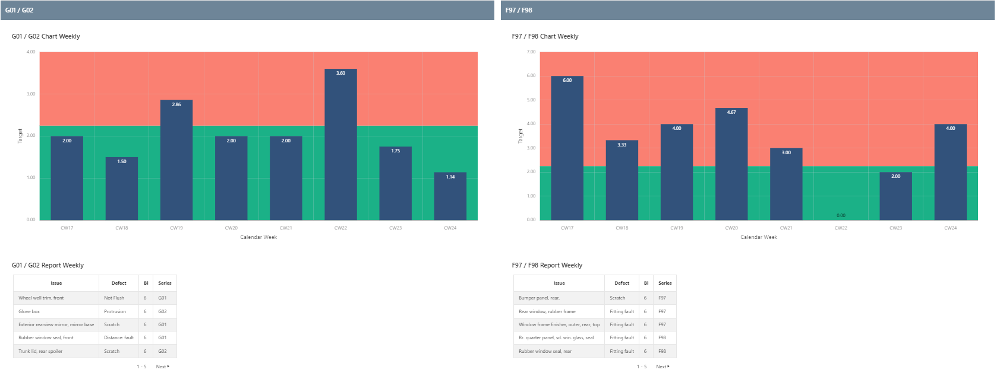
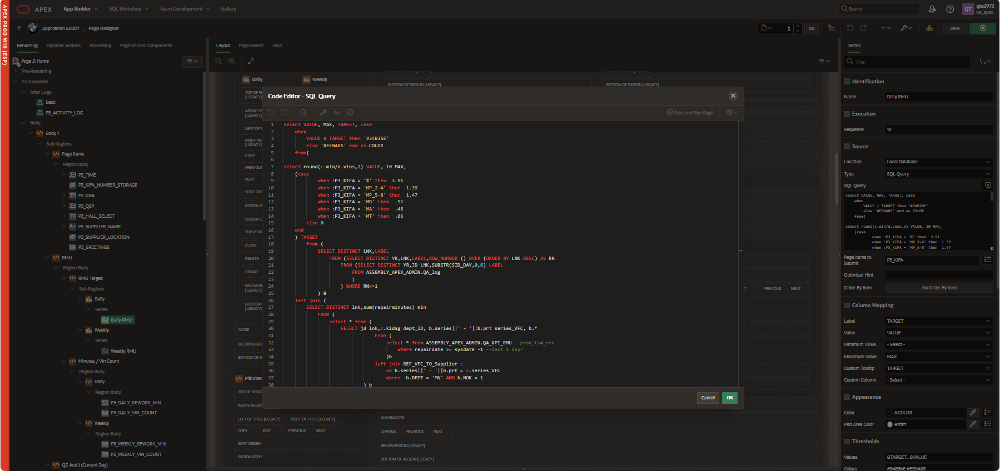
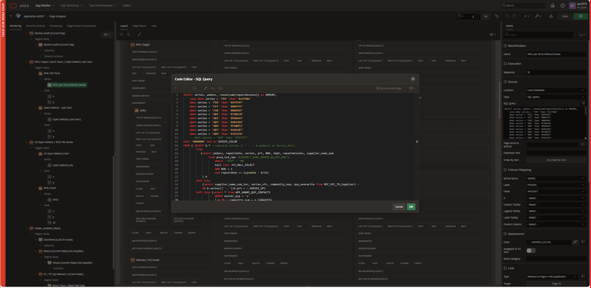

Disclaimer: The screenshots, data, and SQL on this page come from a past, non-live snapshot of an internal BMW Group dashboard. I received permission to share them for portfolio purposes. The data is outdated and does not reflect current BMW Group operations, systems, or performance. This page is not affiliated with or endorsed by BMW Group.
Project Summary
- What: A one-page quality KPI dashboard for the MN (supplier and parts quality) department
- Where: BMW Group, Spartanburg Plant
- My role: SQL development, dashboard build, and KPI analysis
- Tools: Oracle APEX, Oracle SQL, Power BI (existing report logic)
The Problem
Managers were checking quality numbers across several reports, including an existing Power BI report and other pages of an internal platform. Getting a quick read on the day's quality picture meant jumping between tools.
What I Built
A single dashboard page in Oracle APEX that showed:
- Daily and weekly RMU (repair minutes per unit) gauges, colored green or red against the target
- The top parts driving repair minutes over the last 8 hours, broken out by vehicle series
- Open defects over the last hour and across the current week
- Monthly and weekly RMU trends by rework hall, compared against target
- Weekly results by vehicle series
- Audit results, downtime, and short-track and road-test call lists
- Filters for time range, team, quality contact, rework hall, and supplier
Screenshots




How I Approached It
- Reused proven SQL from other parts of the platform instead of rebuilding it from scratch.
- Migrated the existing Power BI report structure into APEX so managers could see the data in one place.
- Joined repair records to part and supplier reference tables so each defect could be traced to a supplier and quality contact.
- Calculated RMU as total repair minutes divided by vehicles produced, then compared it to team-specific targets.
- Analyzed the KPI data with managers to separate real problems from normal variation.
Result
Managers got one page to check the quality picture at the start of a shift, with the biggest repair-time drivers at the top, so attention went to genuine issues instead of normal day-to-day swings.
SQL Examples
Daily RMU (Repair Minutes per Unit)
Calculates repair minutes per unit for the last day, looks up the target for the selected team, and returns green or red for the gauge depending on whether the value is under target.

SELECT VALUE, MAX, TARGET,
CASE WHEN VALUE < TARGET THEN '#34B36E'
ELSE '#EE0405' END AS COLOR
FROM (
SELECT ROUND(c.min / d.vins, 2) VALUE, 10 MAX,
(CASE
WHEN :P3_KIFA = '%' THEN 3.91
WHEN :P3_KIFA = 'MP_2-4' THEN 1.39
WHEN :P3_KIFA = 'MP_5-8' THEN 1.47
WHEN :P3_KIFA = 'MD' THEN .51
WHEN :P3_KIFA = 'MA' THEN .48
WHEN :P3_KIFA = 'MT' THEN .06
ELSE 0
END) TARGET
FROM (
SELECT DISTINCT LNK, LABEL
FROM (SELECT DISTINCT YR, LNK, LABEL,
ROW_NUMBER() OVER (ORDER BY LNK DESC) AS RN
FROM (SELECT DISTINCT YR, JD LNK, SUBSTR(SID_DAY, 0, 6) LABEL
FROM ASSEMBLY_APEX_ADMIN.QA_log))
WHERE RN <= 1
) B
LEFT JOIN (
SELECT DISTINCT lnk, SUM(repairminutes) min
FROM (
SELECT * FROM (
SELECT jd lnk, c.kidag dept_ID, b.series || ' - ' || b.prt series_VFC, b.*
FROM (
SELECT * FROM ASSEMBLY_APEX_ADMIN.QA_KPI_RMU
WHERE repairdate >= SYSDATE - 1
) b
LEFT JOIN REF_VFC_TO_Supplier c
ON b.series || ' - ' || b.prt = c.series_VFC
WHERE b.DEPT = 'MN' AND b.NOK = 1
) b
WHERE (dept_ID LIKE :P3_KIFA OR dept_ID IS NULL)
AND b.hall LIKE :P3_HALL_SELECT
)
GROUP BY lnk
) C ON C.lnk = B.lnk
LEFT JOIN (
SELECT lnk, SUM(vc) VINS
FROM (SELECT DISTINCT LNK, KPI, KPIM, KPIC, AREA, SERIES, VC, DCM, VAL
FROM ASSEMBLY_APEX_ADMIN.QA_KPI_FRZ_FREQ
WHERE KPI = 'RMU'
AND NOK = 1
AND FREQ = 'D'
AND AREA = 'MN'
AND LVL = 3)
GROUP BY lnk
) d ON d.LNK = B.LNK
);Top 5 Parts by Repair Minutes (Last 8 Hours)
Ranks the parts driving the most repair time in the current shift and assigns each vehicle series a consistent chart color. Filters cover rework hall, quality contact, team, and supplier.

SELECT series, pddesc, ROUND(SUM(repairminutes)) AS AMOUNT,
CASE WHEN series = 'F95' THEN '#c47b0e'
WHEN series = 'F96' THEN '#9f9f9f'
WHEN series = 'F97' THEN '#B0FFFF'
WHEN series = 'F98' THEN '#00999F'
WHEN series = 'G01' THEN '#7681CB'
WHEN series = 'G02' THEN '#960145'
WHEN series = 'G05' THEN '#4B3369'
WHEN series = 'G06' THEN '#FA8072'
WHEN series = 'G07' THEN '#1bb187'
WHEN series = 'G09' THEN '#32527b'
ELSE '#000000' END AS SERIES_COLOR
FROM (
SELECT b.*
FROM (
SELECT pddesc, repairdate, series, prt, NOK, dept, repairminutes, supplier_name_num
FROM prod_ts4_rmu
WHERE hall LIKE :P3_HALL_SELECT
AND NOK = 1
AND repairdate >= (SYSDATE - 8/24)
) b
LEFT JOIN (
SELECT supplier_name_num_loc, series_vfc, commodity_num, qsp_overwrite
FROM REF_VFC_TO_Supplier
) c ON b.series || ' - ' || b.prt = c.SERIES_VFC
LEFT JOIN (
SELECT * FROM APP_60005_QSP_CONTACTS
WHERE master_qsp = 'x'
) e ON c.commodity_num = e.commodity
WHERE NVL(NVL(qsp_overwrite, QSP_NAME), 'x') LIKE :P3_QSP
AND NVL(KIFA, 'x') LIKE :P3_KIFA
AND TRIM(SUBSTR(supplier_name_num_loc, 1, INSTR(supplier_name_num_loc, '_') - 1))
LIKE '%' || UPPER(:P3_SUPPLIER_NAME) || '%'
)
GROUP BY pddesc, series
ORDER BY ROUND(SUM(repairminutes)) DESC
FETCH FIRST 5 ROWS ONLY;Skills Used
SQL (joins, aggregation, window functions, CASE logic, bind-variable filters) | Oracle APEX | KPI design | Dashboard layout | Report migration from Power BI